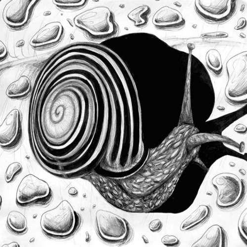
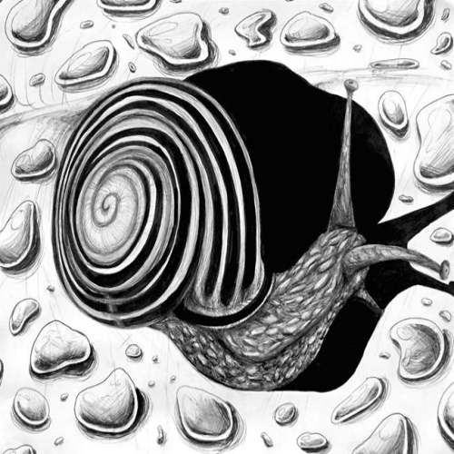

Leo Trilling
Leo is an artist and aspiring character designer. Leo has been drawing since he could hold a pencil and he looks up to his mother, another talented artist, as his role model. He is a fan of books and games, often sci-fi or fantasy, and is heavily inspired to create further because of the stories he reads and makes. Leo takes pride in trying any artistic material he can get his hands on and pushing his artistic comfort zone.
Leo's main medium is digital illustration but he also works in watercolor, graphite, oils, and acrylics. He practices digital art the most but he enjoys experimenting with mediums that are soft and fun to make a mess with such as graphite, charcoal, and chalk pastels. Art is very important to Leo but he finds true love for the stories and personalities he creates with his characters in his art. His drive to tell characters stories is what pushes him to continue improving and creating. Leo enjoys making characters as well as reimagining them but his practice isn't limited to people, he also pushes himself to add nature and environments to his pieces. Leo enjoys stylized art and cartoonish depictions but does what he can to improve his realistic and other technical abilities.
Leo has been producing paid art commissions from various clients for over four years. He gets contact through email and social media and creates character art and designs from reference or description.His art has been displayed in the New West Charter Annual Art Show in 2019 and the New West Charter Featured Artist Shows 2019-2020.
Experience
Freelance Artist/Designer
• Creates commissioned art for personal or business use, working closely with clients to develop and deliver their artwork needs
• Original concept development, character creation, fashion design, and backgrounds
• Illustration, coloring, and output of artwork in printed or digital formats
Babysitter
• Experienced babysitter for children of all ages, including infants, toddlers, and older children
• Provides supervision, play, activities, games, light cooking and cleaning
• Basic safety and first aid knowledge, including CPR
Petsitter/Dog Walker/House Sitter
• Provides pet sitting and care, specializing in dogs, cats, and small animals, dog walking, feeding, cleaning up after, exercising, and loving pets
• House sitting including mail, newspaper, and package pick up, watering of plants, and light gardening
Education
UC Riverside
New West Charter School
Portfolio



